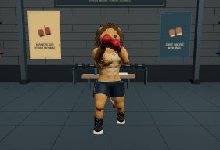

Left: published R81 (74176e0). Right: final R82 runtime (afd763a). All images are actual app renders. Room cameras match; fight framing intentionally widens in R82.

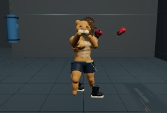
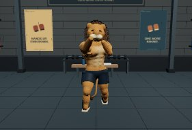
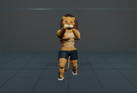
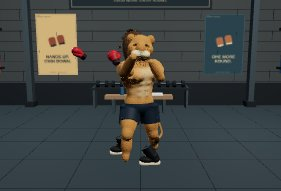
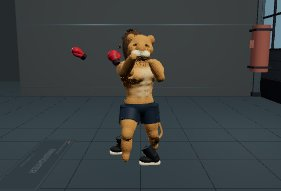
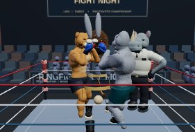
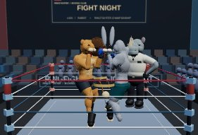
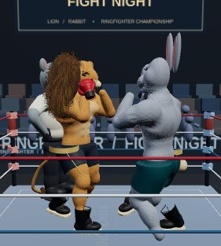
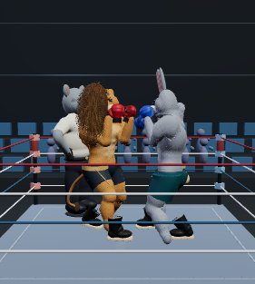
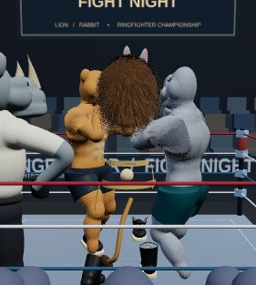
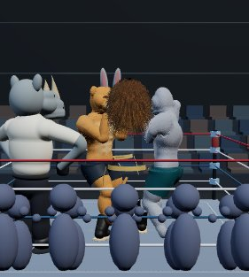
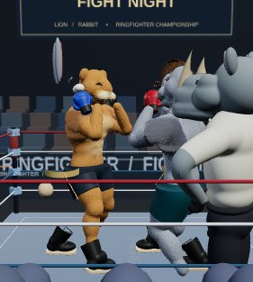
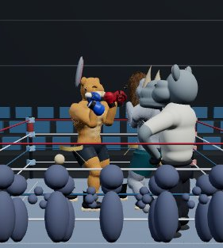
Fixed camera, 100 ms pose samples; fur ribbons, shadows and scenery hidden to expose deformation. These are neither beauty renders nor an FPS measurement.
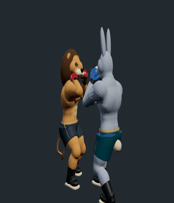
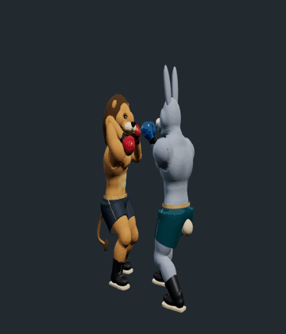
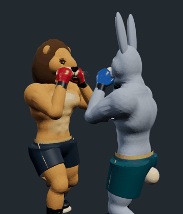
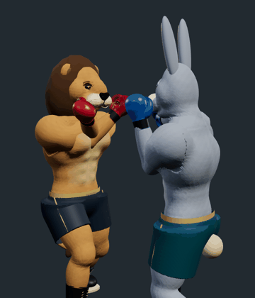
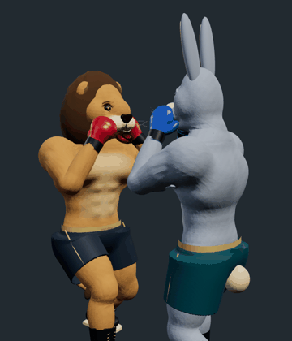
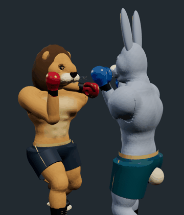
Physical iPhone Safari and Android performance remain unverified. Raw measurements, source provenance and validation workflow are in the evidence folder and implementation report.